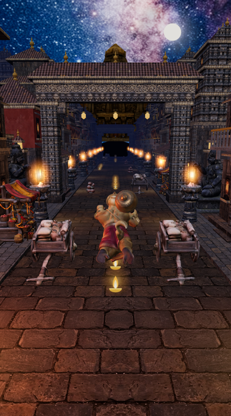
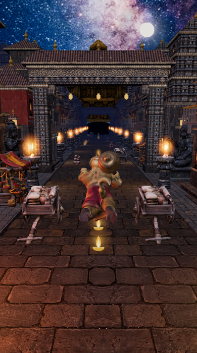
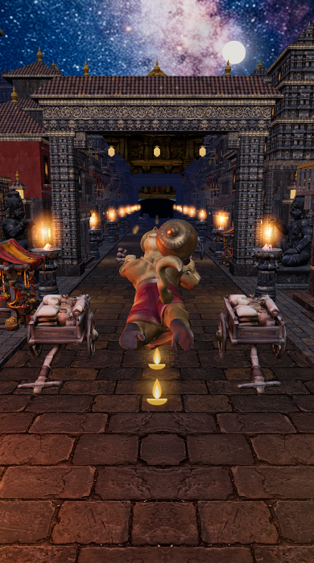
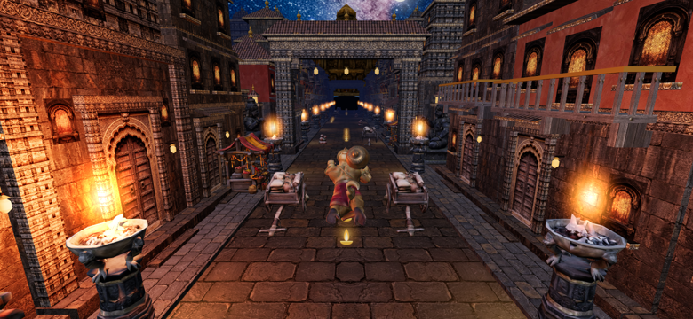
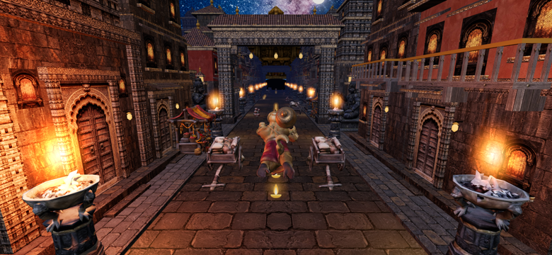
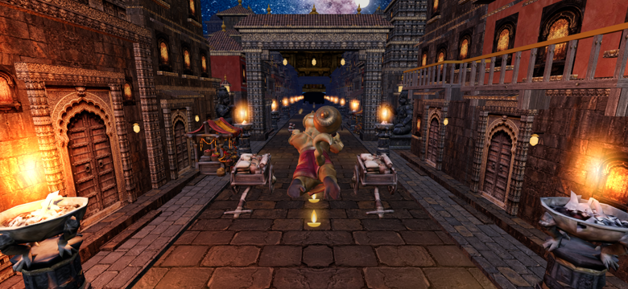
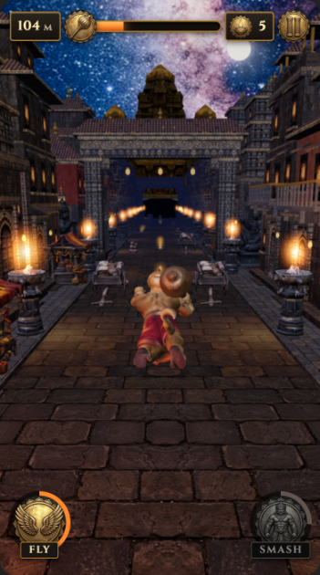
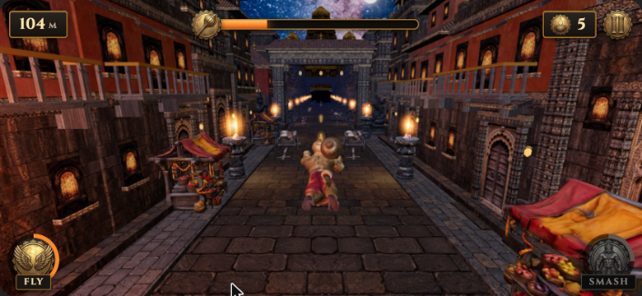
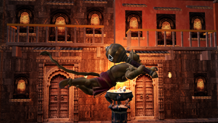
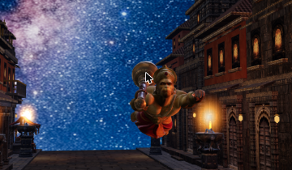

Taken from the running game. Left arm reaching ahead, the mace resting over his right shoulder, one leg trailing straight and one bent, head lifted, tail streaming behind. He flies 2.5 m above the road.
Left is what you had (3.3 m behind, 2.1 m above). Middle is one step in (2.8 m, 1.8 m). Right is two steps in (2.3 m, 1.5 m): this one is in the game now. Say "middle" if it is too close.









